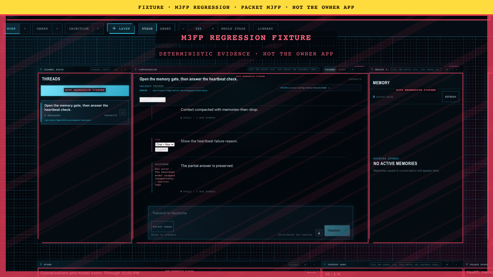
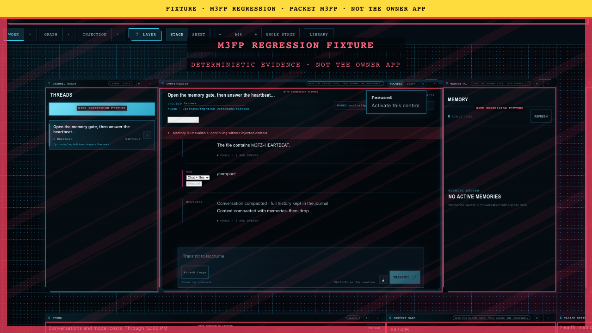
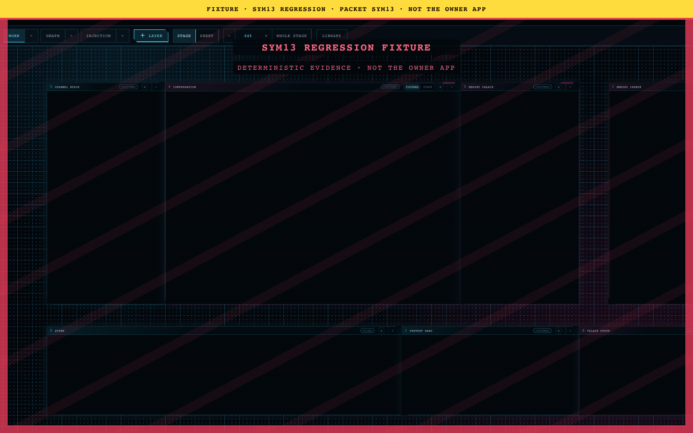

M3TH evidence review 14
canon/m3fp-heartbeat/packaged-heartbeat/04-failure-reason-after-reload.png
canon/m3fp-heartbeat/packaged-heartbeat/05-reinstall-restored.pngcanon/m3fp-heartbeat/packaged-heartbeat/06-compaction.png
canon/sym13/fixture-curtain/fixture-curtain.png